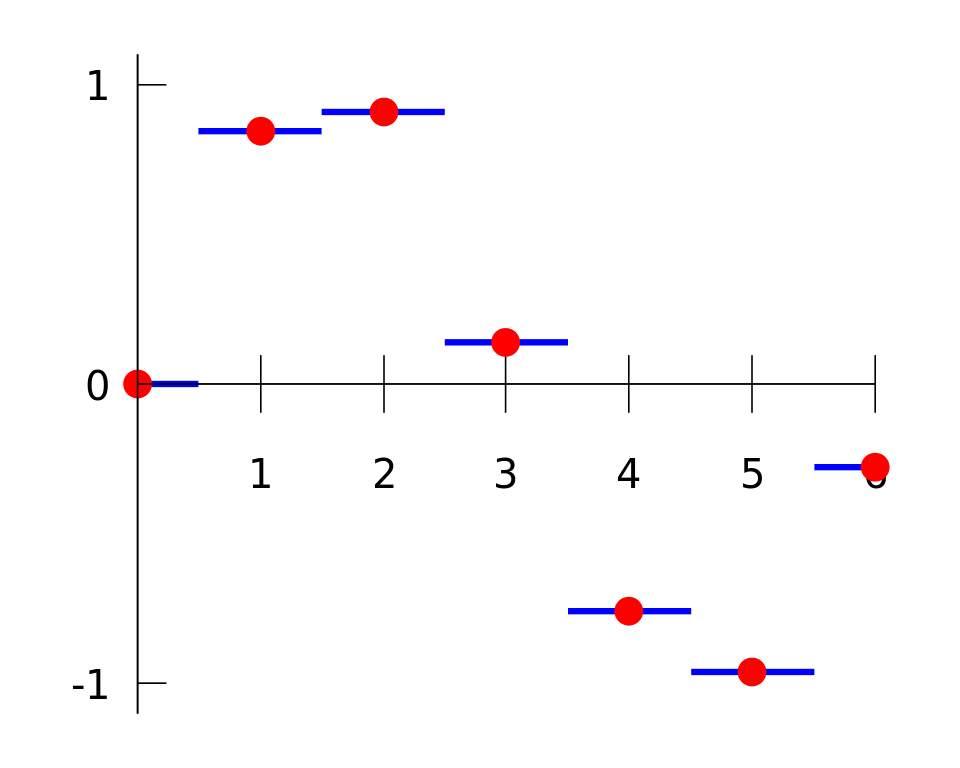
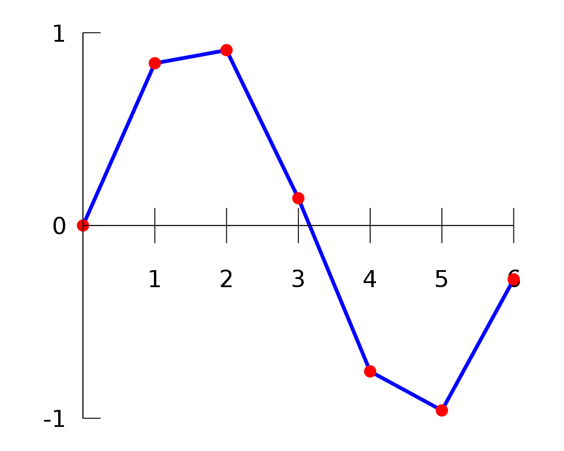
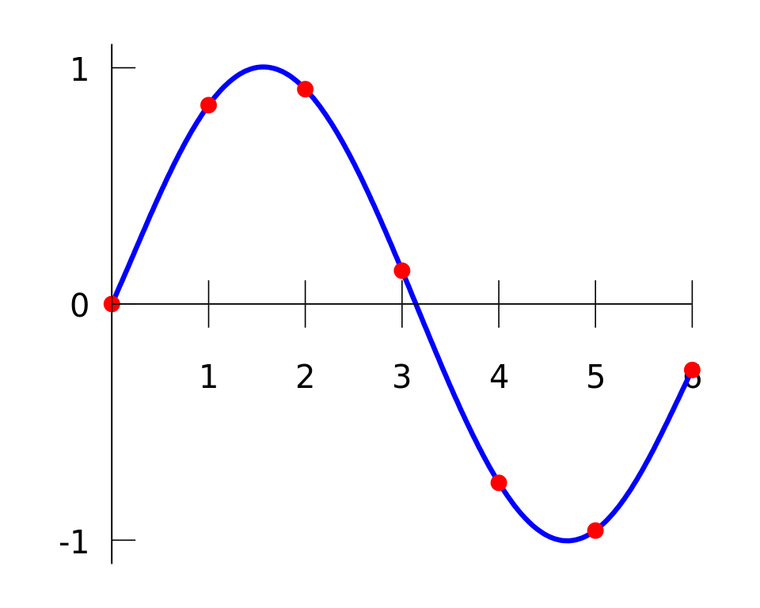

|
|
ParaMonte Fortran 2.0.0
Parallel Monte Carlo and Machine Learning Library
See the latest version documentation. |
|
|
ParaMonte Fortran 2.0.0
Parallel Monte Carlo and Machine Learning Library
See the latest version documentation. |
This module contains procedures and data types for interpolation of finite samples of data.
More...
Data Types | |
| interface | getExtrap |
Generate and return the approximate polynomial interpolation/extrapolation value of the input specified point x for the specified method. More... | |
| interface | getInterp |
Generate and return the approximate polynomial interpolation value of the input specified point x for the specified method. More... | |
| type | monopol_type |
| This is a concrete derived type whose instances are exclusively used to signify an interpolation using a single polynomial of highest degree possible given the abscissa within an interface of a procedure of the ParaMonte library. More... | |
| type | neimean_type |
| This is a concrete derived type whose instances are exclusively used to signify an interpolation using the smallest node larger than the query point within an interface of a procedure of the ParaMonte library. The name neimean stands for neighbor mean.More... | |
| type | neinear_type |
| This is a concrete derived type whose instances are exclusively used to signify an interpolation using the smallest node larger than the query point within an interface of a procedure of the ParaMonte library. The name neinear stands for neighbor nearest.More... | |
| type | neinext_type |
| This is a concrete derived type whose instances are exclusively used to signify an interpolation using the smallest node larger than the query point within an interface of a procedure of the ParaMonte library. The name neinext stands for neighbor next.More... | |
| type | neiprev_type |
| This is a concrete derived type whose instances are exclusively used to signify an interpolation using the largest node smaller than the query point within an interface of a procedure of the ParaMonte library. The name neiprev stands for neighbor previous.More... | |
| type | piwilin_type |
| This is a concrete derived type whose instances are exclusively used to signify an interpolation using piecewise lines within an interface of a procedure of the ParaMonte library. More... | |
| type | piwipol_type |
| This is a concrete derived type whose instances are exclusively used to signify an interpolation using multiple piecewise polynomial of arbitrary degree possible given the abscissa within an interface of a procedure of the ParaMonte library. More... | |
| interface | setExtrap |
Generate and return the approximate polynomial interpolation/extrapolation value of the input specified point x for the specified method. More... | |
| interface | setInterp |
Generate and return the approximate polynomial interpolation value of the input specified point x for the specified method. More... | |
Variables | |
| character(*, SK), parameter | MODULE_NAME = "@pm_polation" |
| type(neimean_type), parameter | neimean = neimean_type() |
| type(neinear_type), parameter | neinear = neinear_type() |
| type(neinext_type), parameter | neinext = neinext_type() |
| type(neiprev_type), parameter | neiprev = neiprev_type() |
| type(piwilin_type), parameter | piwilin = piwilin_type() |
| type(monopol_type), parameter | monopol = monopol_type() |
This module contains procedures and data types for interpolation of finite samples of data.
Interpolation is a type of estimation, a method of constructing (finding) new data points based on the range of a discrete set of known data points.
The simplest interpolation method is to locate the nearest data value, and assign the same value.
In simple problems, this method is unlikely to be used, as linear interpolation (see below) is almost as easy, but in higher-dimensional multivariate interpolation, this could be a favorable choice for its speed and simplicity.

Linear interpolation is a method of curve fitting using linear polynomials to construct new data points within the range of a discrete set of known data points.
If the two known points are given by the coordinates \((x_{0},y_{0})\) and \((x_{1},y_{1})\), the linear interpolant is the straight line between these points.
For a value \(x\) in the interval \((x_{0},x_{1})\), the value \(y\) along the straight line is given from the equation of slopes
\begin{equation} \frac {y-y_{0}}{x-x_{0}} = \frac{y_{1}-y_{0}}{x_{1}-x_{0}} ~, \end{equation}
which can be derived geometrically from the figure on the right.
It is a special case of polynomial interpolation with \(n = 1\).
Solving this equation for \(y\), which is the unknown value at \(x\), gives
\begin{equation} \begin{aligned} y &= y_{0} + (x - x_{0}) {\frac{y_{1} - y_{0}}{x_{1}-x_{0}}} \\ &= \frac{y_{0}(x_{1}-x_{0})}{x_{1}-x_{0}} + \frac{y_{1}(x-x_{0})-y_{0}(x-x_{0})}{x_{1}-x_{0}} \\ &= \frac{y_{1} x - y_{1} x_{0} - y_{0} x + y_{0} x_{0} + y_{0} x_{1} - y_{0} x_{0}}{x_{1} - x_{0}} \\ &= \frac{y_{0}(x_{1} - x) + y_{1}(x - x_{0})}{x_{1} - x_{0}} ~, \end{aligned} \end{equation}
which is the formula for linear interpolation in the interval \((x_{0}, x_{1})\).
Outside this interval, the formula is identical to linear extrapolation.
This formula can also be understood as a weighted average.
The weights are inversely related to the distance from the end points to the unknown point; the closer point has more influence than the farther point.
Thus, the weights are \(\textstyle 1 - (x - x_{0}) / (x_{1} - x_{0})\) and \(\textstyle 1 - (x_{1} - x) / (x_{1} - x_{0})\), which are normalized distances between the unknown point and each of the end points.
Because these sum to \(1\),
\begin{equation} \begin{aligned} y &= y_{0} \left(1 - {\frac{x - x_{0}}{x_{1} - x_{0}}} \right) + y_{1} \left(1-{\frac {x_{1}-x}{x_{1}-x_{0}}}\right) \\ &= y_{0} \left(1 - {\frac{x - x_{0}}{x_{1} - x_{0}}}\right) + y_{1}\left({\frac {x-x_{0}}{x_{1}-x_{0}}}\right) \\ &= y_{0} \left({\frac{x_{1} - x}{x_{1} - x_{0}}}\right) + y_{1}\left({\frac{x - x_{0}}{x_{1} - x_{0}}}\right) \end{aligned} \end{equation}
yielding the formula for linear interpolation given above.

Polynomial interpolation is a generalization of linear interpolation.
For a sample of \(n\) data points, there is exactly one polynomial of degree at most \(n − 1\) going through all the data points.
Formally, given a set of \(n + 1\) data points \((x_{0},y_{0}),\ldots ,(x_{n},y_{n})\), with no two \(x_{j}\) the same, a polynomial function \(p(x) = a_{0} + a_{1}x + \cdots + a_{n}x^{n}\) is said to interpolate the data if \(p(x_{j}) = y_{j}\) for each \(j\in\{0,1,\dotsc,n\}\).
There is always a unique such polynomial, commonly given explicitly as either a Lagrange polynomial or Newton polynomial.
The polynomial interpolation error is proportional to the distance between the data points to the power \(n\).
Furthermore, the interpolant is a polynomial and thus infinitely differentiable.
As such, polynomial interpolation overcomes most of the problems of linear interpolation.
However, polynomial interpolation also has some disadvantages:

The Neville algorithm, derived by the mathematician Eric Harold Neville in 1934, is used for polynomial interpolation.
Given \(n + 1\) points \(\{(x_i, y_i), i = 1, \ldots, n + 1\}\), there is a unique polynomial of degree \(\leq n\) which goes through the given points.
The Neville algorithm approximates this unknown polynomial at a desired point \(x\) without explicitly evaluating the exact-fit polynomial coefficients.
As such, the Neville algorithm may be computationally inappropriate for usage with many query points on the same input data abscissa and function values.
Unlike the Lagrange polynomial method, the Neville algorithm interpolation method is computationally faster and provides an estimate of the error in the output approximation.
Spline interpolation is a form of interpolation where the interpolant is a special type of piecewise polynomial called a spline.
That is, instead of fitting a single, high-degree polynomial to all of the values at once, spline interpolation fits low-degree polynomials to small subsets of the values, for example, fitting nine cubic polynomials between each of the pairs of ten points, instead of fitting a single degree-ten polynomial to all of them.
Spline interpolation is often preferred over polynomial interpolation because the interpolation error can be made small even when using low-degree polynomials for the spline.
Spline interpolation also avoids the problem of Runge phenomenon, in which oscillation can occur between points when interpolating using high-degree polynomials.
Final Remarks ⛓
If you believe this algorithm or its documentation can be improved, we appreciate your contribution and help to edit this page's documentation and source file on GitHub.
For details on the naming abbreviations, see this page.
For details on the naming conventions, see this page.
This software is distributed under the MIT license with additional terms outlined below.
| character(*, SK), parameter pm_polation::MODULE_NAME = "@pm_polation" |
Definition at line 148 of file pm_polation.F90.
| type(monopol_type), parameter pm_polation::monopol = monopol_type() |
Definition at line 359 of file pm_polation.F90.
| type(neimean_type), parameter pm_polation::neimean = neimean_type() |
Definition at line 181 of file pm_polation.F90.
| type(neinear_type), parameter pm_polation::neinear = neinear_type() |
Definition at line 217 of file pm_polation.F90.
| type(neinext_type), parameter pm_polation::neinext = neinext_type() |
Definition at line 253 of file pm_polation.F90.
| type(neiprev_type), parameter pm_polation::neiprev = neiprev_type() |
Definition at line 289 of file pm_polation.F90.
| type(piwilin_type), parameter pm_polation::piwilin = piwilin_type() |
Definition at line 324 of file pm_polation.F90.